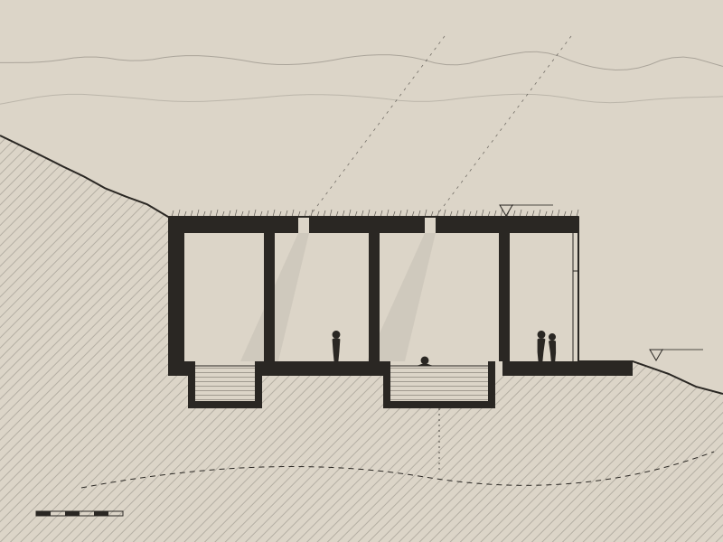
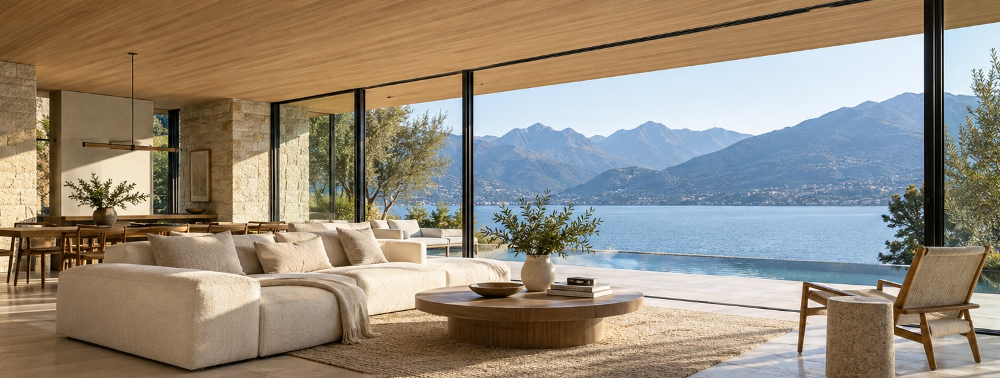
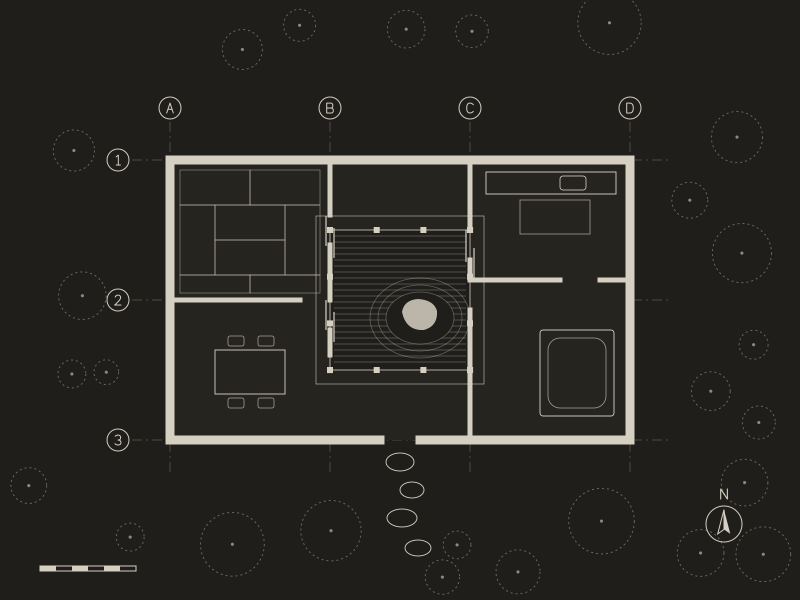
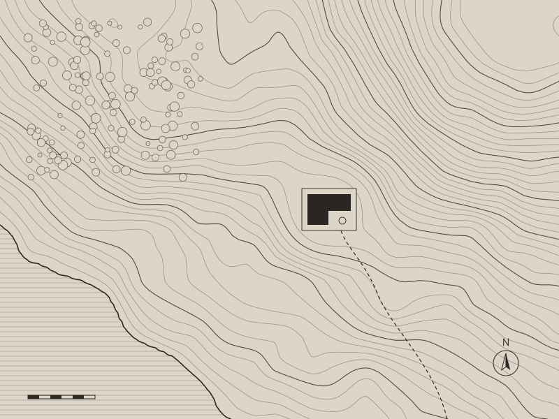
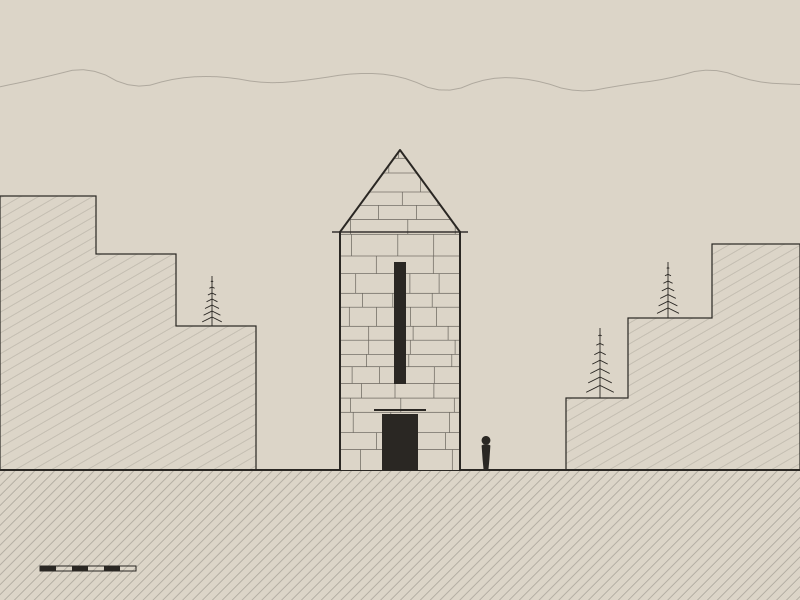
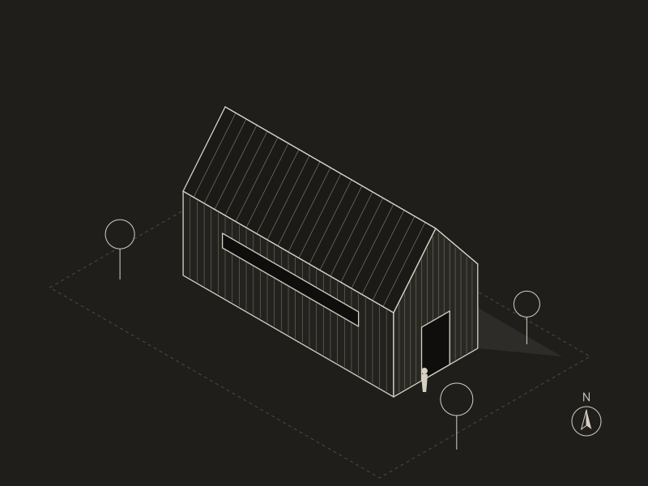

01
Graubünden · 2025
Vals Thermal Sanctuary
Baths set into the slope, lit through the roof

Baths set into the slope, lit through the roof

A single room under a larch roof, open to the water

Rooms around a gravel court in the cedar forest

A gallery on the one level shelf of the hillside

Built from the stone cut on the terraces around it

A timber store for fleece, felt and pattern books
| Year | Project | Location | Programme | Status |
|---|---|---|---|---|
| 2026 | Lake Lucerne Pavilion | Completed | ||
| 2026 | Engadin Stone Pavilion | Completed | ||
| 2025 | Vals Thermal Sanctuary | Completed | ||
| 2025 | Lavaux Vineyard House | On site | ||
| 2024 | Kyoto Forest Residence | Completed | ||
| 2024 | Hudson Valley Library | On site | ||
| 2023 | Andeer Quarry Chapel | Completed | ||
| 2023 | Naoshima Tea House | Completed | ||
| 2022 | Appenzell Wool Archive | Completed | ||
| 2021 | Maggia Valley Bridge House | Completed | ||
| 2020 | Bregenz Lake Baths | Competition | ||
| 2019 | Lofoten Studio Cabins | Unbuilt |
Tell us about the place first: the ground, the light, the way it is reached. Drawings come later, after a year of visits and a model built on the site itself.
Start a conversation